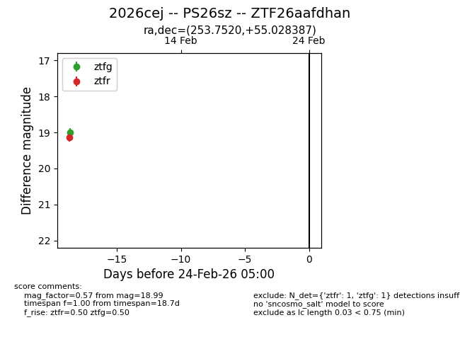
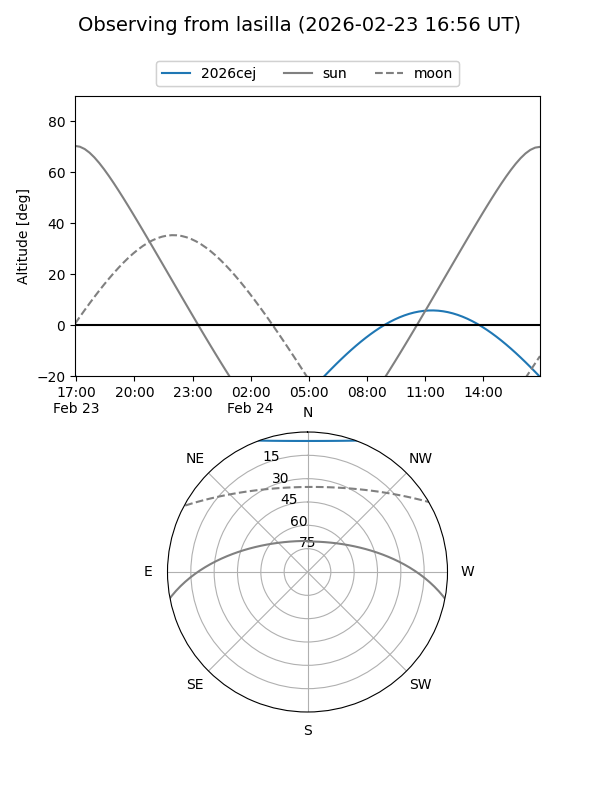
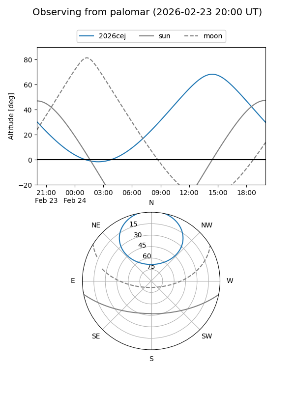

2026cej
Target 2026cej at 2026-02-24 09:08
Aliases and brokers:
FINK: link
Lasair: link
ALeRCE: link
TNS: link
YSE: link
alt names
ZTF26aafdhan (ztf,fink_ztf)
2026cej (tns,yse)
PS26sz (panstarrs)
Coordinates:
equatorial (ra, dec) = 253.7520,+55.02839
equatorial (HMS+DMS) = 16:55:00.47,+55:01:42.19
galactic (l, b) = (83.1831,+38.44733)
Flags:
Photometry:
last ztfg=18.99, ztfr=19.13
1 ztfg, 1 ztfr detections
Lightcurve

Visibility


Additional plots